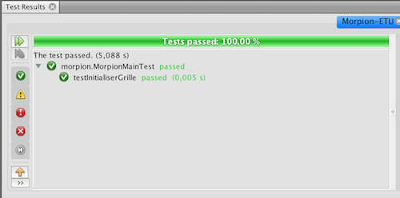
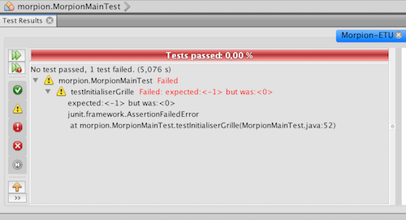
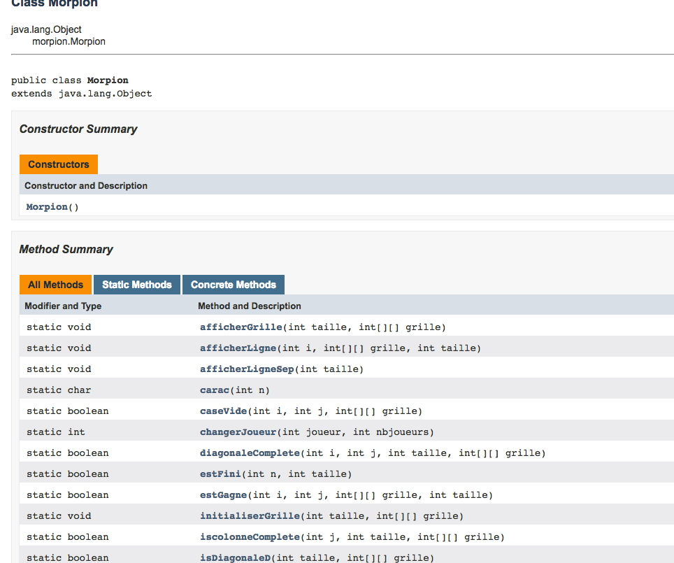
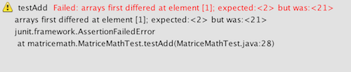

TP matrice - Tests unitaires
Mise en oeuvre avec le jeu du morpion
Lors cette séance vous allez découvrir l'importance et l'intérêt de faire des tests unitaires. Pour cela, vous allez devoir débugger un code Java permettant de jouer au Morpion.

Principe des tests unitaires
L'interface de tests
Nous allons commencer par prendre en main l'interface permettant de réaliser des tests. En premier lieu, récupérer ce projet Morpion.
Ce projet contient tout le code permettant de jouer au morpion. En toute logique il devrait fonctionner de la sorte :
- Chaque joueur pose à tour de rôle son pion
- Le programme vérifie que le pion est posé sur une case libre et qui existe
- Le vainqueur est annoncé quand 3 pions sont alignés
- Annonce d'un match nul si pas de vainqueur
Question 1
Compilez le code du morpion et testez-le. Vous observerez qu'il est buggé.
Votre premier réflexe est j'imagine d'aller chercher les bugs et de les corriger. C'est un bon reflexe, mais ça ne se fait pas n'importe comment ! Ca s'anticipe !
Les tests unitaires
Présentation
De manière générale, les tests servent à détecter des bugs, c'est-à-dire des différences entre ce qu'on attend de votre programme, et ce qu'il fait réellement. Par exemple l'appel somme(2,3) devrait renvoyer 5 mais renvoie 4. Tout développeur produit des bugs. L'important c'est d'en faire peu, et surtout de les détecter tôt. En effet, plus ils sont détectés tôt, plus ils sont faciles à trouver et corriger, et accessoirement moins ils coûtent cher aux entreprises. Plusieurs pratiques se développent dans ce sens, et plus généralement pour améliorer la qualité logicielle :
- mieux définir ce qui doit être développé (qualité des spécifications, meilleure communication avec le client via les méthodes agiles, etc).
- pair programming (coder à deux)
- revue de code (pour les curieux, exemple chez OpenBSD : paragraphe Audit Process)
- validation (prouver formellement des programmes, abordé en Licence Pro DAGPI)
- tests
Il existe plusieurs types de tests : unitaires, fonctionnels, d'intégration, etc. Pour l'instant on ne s'intéresse qu'aux tests unitaires, c'est-à-dire des tests qui portent sur des petites portions de code, typiquement une fonction. Un test unitaire consiste alors à lancer la fonction sur plusieurs valeurs, et comparer chaque résultat avec la valeur souhaitée. Le test possède une bonne couverture s'il teste beaucoup de valeurs, et surtout différents cas de figure, les cas critiques, etc. Par exemple pour la fonction somme, on peut tester:
- somme(2,3) == 5 la somme de deux entiers positifs
- somme(2,0) == 2 la somme d'un positif avec zéro
- somme(0,3) == 3 la somme de zéro avec un entier positif
- somme(0,0) == 0 la somme de zéro avec lui-même
- somme(1,-1) == 0 la somme d'un positif et d'un négatif
- somme(-1,-1) == -2 la somme de deux négatifs
- somme(-1,0) == -1 la somme d'un négatif avec zéro
Quand faut-il écrire les tests unitaires? A vous de voir, les pratiques divergent selon les entreprises. Un premier réflexe est de les écrire après que la fonction soit codée. On peut aussi les écrire avant, en laissant au début la fonction vide (exemple : somme() renvoie toujours zéro). Les tests seront faux au début, puis vrais petit à petit quand vous coderez. L'intérêt est de réfléchir à tous les cas limites avant de coder, et de ne pas écrire les tests sous l'influence de son code.
Morpion
JUnit
Un module très utilisé en Java pour faire des tests unitaires est JUnit.
Nous allons créer une classe MorpionTest contenant les tests unitaires des fonctions de la classe Morpion.
Dans chaque projet NetBeans (dans l'arborescence de gauche) apparaît :
- Source Packages : emplacement du code source
- Test Packages : emplacement des tests unitaires.
@Test
public void testInitialiserGrille() {
int taille = 3;
int[][] grille = {{-1, -1, -1}, { -1, -1, -1}, { -1, -1, -1}};
Morpion.initialiserGrille(taille, grille);
for (int lig = 0; lig < grille.length; lig++) {
for (int col = 0; col < grille[lig].length; col++) {
assertEquals(0, grille[lig][col]);
}
}
}
Ce test contient du code qui successivement :
- Déclare une grille où chaque case est initialisée à -1
- Effectue l'appel à la fonction initialiserGrille()
- Teste que chaque case de la grille vaut bien 0.
La fonction
assertEquals(0, grille[lig][col])
s'assure que la case (lig,col) contient la valeur 0 (0 signifie que la case est vide). Si ce n'est pas le cas alors un message d'erreur sera affiché.
Concernant JUnit :
- l'annotation @Test permet à JUnit d'identifier les fonctions qui sont des tests unitaires. Remarque : si une annotation @Test ne compile pas, importez la bibliothèque JUnit comme suggéré par NetBeans.
- la méthode assertEquals(valeurAttendue, valeurCalculee) s'assure que valeurCalculee vaut bien le résultat attendu, c'est-à-dire valeurAttendue.
- la méthode assertTrue(monTest) s'assure que le booléen monTest est vrai.
- symétriquement, la méthode assertFalse(monTest) s'assure que le booléen monTest est faux.
Il y a plusieurs façons de lancer les tests unitaires, selon ce que l'on veut faire :
| lancer tous les tests d'une classe | clic droit sur le fichier (à gauche), puis "Tester le fichier" |
| idem, mais en mode debug | clic droit sur le fichier (à gauche), puis "Déboguer en testant fichier" |
| lancer un test unitaire (une méthode) | clic droit sur le nom de la méthode, puis "Run Focused Test Method" |
| idem, en mode debug | clic droit sur le nom de la méthode, puis "Debug Focused Test Method" |
Lorsque vous exécutez ces tests, une fenêtre s'ouvre et vous indique les tests réussis et ceux qui ont échoué. Par exemple dans notre cas voici ce que vous indique JUnit selon qu'un assert ait détecté une erreur ou pas.


Question 2
Corrigez le code de la fonction initialiserGrille() pour qu'elle passe les tests.
Question 3
Recopiez le code du test de la fonction isColonneComplete() et exécutez le test unitaire. Vous remarquerez qu'il ne passe pas.
@Test
public void testIsColonneComplete(){
int taille = 3;
int[][] grille1 = {{0, 0, 0}, {0, 0, 0},{0, 0, 0}};
int[][] grille2 = {{2, 1, 1}, {1, 2, 2},{1, 2, 1}};
int[][] grille3 = {{0, 1, 0}, {0, 1, 2},{2, 1, 0}};
int[][] grille4 = {{2, 1, 1}, {2, 0, 0},{2, 1, 0}};
int[][] grille5 = {{1, 0, 2}, {1, 0, 2},{0, 1, 0}};
for (int i = 0; i < 3; i++) {
assertFalse(Morpion.isColonneComplete(i, taille, grille1));
}
for (int i = 0; i < 3; i++) {
assertFalse(Morpion.isColonneComplete(i, taille, grille2));
}
assertFalse(Morpion.isColonneComplete(0, taille, grille3));
assertTrue( Morpion.isColonneComplete(1, taille, grille3));
assertFalse(Morpion.isColonneComplete(2, taille, grille3));
assertTrue( Morpion.isColonneComplete(0, taille, grille4));
assertFalse(Morpion.isColonneComplete(1, taille, grille4));
assertFalse(Morpion.isColonneComplete(2, taille, grille4));
assertFalse(Morpion.isColonneComplete(0, taille, grille5));
assertFalse(Morpion.isColonneComplete(1, taille, grille5));
assertTrue( Morpion.isColonneComplete(2, taille, grille5));
}
}
Dans le cas testé, la fonction isColonneComplete() est bonne. C'est le test unitaire qui présente une erreur. Et oui, un test unitaire reste un code comme un autre. Il peut contenir des erreurs. Identifiez l'erreur commise dans ce test unitaire et corrigez-le.
Question 4
Les fonctions isDiagonaleI() et changerJoueur() contiennent chacune un (et un seul) bug. Pour chacune d'entre elle :
- Ecrivez les tests unitaires
- Identifiez l'erreur
- Corrigez l'erreur.
Question 5
Une fois les tests passés, réalisez plusieurs parties et vérifiez que tout est conforme à la vidéo du début de l'exercice.
Question 6
Lorsque l'on programme, il est important de commenter son code. Nous l'avons vu, Java propose un format appelé javadoc qui permet de générer une documentation (quasi) automatiquement.
Avant cela effectuez le réglage suivant dans NetBeans : menu Outil / Options / Éditeur / Indices / Javadoc / Créer Javadoc (et Error in Javadoc) / passer de protected à private.
Puis cliquez droit sur votre fichier Morpion.java, faites Outils / Analyse Javadoc. NetBeans vous propose de sélectionner les fonctions à commenter puis va, en fonction des paramètres de la fonction, ajouter en commentaire des mots clefs qui seront utilisés plus tard par le générateur de documentation.
/**
* Initialise une grille, c'est-à-dire met 0 dans chacune de ses cases.
* @param taille taille de la grille carrée, supérieure à 0
* @param grille tableau 2D d'entiers. Chaque case vaut :
* -1 si non initialisée,
* 0 si vide,
* 1 si le joueur 1 a posé son pion dessus,
* 2 si le joueur 2 a posé son pion dessus.
*/
public static void initialiserGrille(int taille, int[][] grille) {
int i, j;
for (i = 0; i < taille; i++) {
for (j = 0; j < taille-1; j++) {
grille[i][j] = 0;
}
}
}
Par défaut NetBeans ne génère la documentation que pour les attributs et méthodes public. Pour générer la documentation pour tous les attributs et méthodes :
- faîtes un clic droit sur votre projet Morpion-ETU et allez dans Propriétés / Documentation,
- cochez "Inclure les membres privés et les membres Package Private" et validez,
- en cliquant droit à nouveau sur le projet puis sur "Génération de la Javadoc" un site web contenant toute la documentation sera généré automatiquement.

Commentez TOUTES les fonctions du Morpion et générez la Javadoc.
Recherche d'une valeur dans un tableau
Nous allons nous intéresser à la recherche d’une valeur dans un tableau d’entiers. Nous prendrons les conventions suivantes :
- si la valeur recherchée est dans le tableau, la fonction de recherche doit retourner l’indice d’une case contenant cette valeur
- sinon, la fonction de recherche retourne -1.
Question 1
Préparez les tests unitaires derechercheLineaire()et
rechercheDichotomique()dans les méthodes
testRechercheLineaire()et
testRechercheDichotomique()
Question 2
Implémentez les méthodesrechercheLineaire()et
rechercheDichotomique()en respectant les signatures données.
Opérations entre matrices
Addition et soustraction de matrices
Pour additionner ou soustraire deux matrices rien de plus simple. Il suffit que les deux matrices aient la même taille et de soustraire/additionner terme à terme les éléments.
Par exemple :
| 5 | 0 | 4 |
| 2 | 3 | 4 |
| 1 | 0 | 1 |
| 2 | 0 | 1 |
| 6 | 0 | 5 |
| 4 | 3 | 5 |
| 5 | 0 | 4 |
| 2 | 3 | 4 |
| 1 | 0 | 1 |
| 2 | 0 | 1 |
| 4 | 0 | 3 |
| 0 | 3 | 3 |
Question 1
Récupérez le code java du projet "matriceMath". Ce projet contient deux fonctions contenant des "bugs".
/**
* Addition de deux matrices de même taille.
*
* @param mat1 la première matrice
* @param mat2 la seconde matrice
* @return la matrice résultat de l'addition des matrices en paramètre
*/
static int[][] add(int[][] mat1, int[][] mat2) {
int[][] matRes = new int[mat1.length][mat1[0].length];
for (int i = 0; i < mat1.length; i++) {
for (int j = 0; j < mat1.length; j++) {
matRes[i][j] = mat1[i][j] + mat2[i][j];
}
}
return matRes;
}
/**
* Soustraction de deux matrices de même taille.
*
* @param mat1 la première matrice
* @param mat2 la seconde matrice
* @return la matrice résultat de la soustraction des matrices en paramètre
*/
static int[][] sub(int[][] mat1, int[][] mat2) {
int[][] matRes = new int[mat1.length][mat1[0].length];
for (int i = 0; i < mat1.length; i++) {
for (int j = 0; j < mat1.length; j++) {
matRes[i][j] = mat1[i][j] - mat1[i][j];
}
}
return matRes;
}
Dans cet exercice on supposera que l'utilisateur est intelligent et qu'il rentrera toujours deux matrices de même taille. Créez les deux tests unitaires nécessaires. Identifiez la ou les erreurs et corrigez-les. Nous vous invitons à utiliser la méthode
assertArrayEquals(,)qui permet de comparer deux tableaux sans avoir à faire soi-même la double boucle. Par exemple
assertArrayEquals(new int[]{1,2,3}, new int[]{1,21,3});
génèrera un affichage dans lequel sera indiqué l'indice du tableau dont les cases diffèrent.

Carré magique (facultatif)
Lors de la création d'un gros projet de développement, il se peut que les tests (unitaires ou autres) soient confiés à une équipe différente de celle qui a codé les fonctions. Cet exercice reproduit ce cas de figure. Une équipe a codé 8 versions d'une fonction permettant de créer un carré magique de dimension 3X3.
Pour rappel, lisez la définition Wikipédia d'un carré magique.
Question 1
Récupérez le projet. Il permet de demander à un service web (a priori buggé) de générer, case par case, les chiffres d'un carré magique 3X3.
Regardez le main() :
public static void main(String[] args) {
int[][] carre = {{-1, -1, -1}, {-1, -1, -1}, {-1, -1, -1}};
for (int i = 0; i < 3; i++) {
for (int j = 0; j < 3; j++) {
carre[i][j] = requeteCarre.getVal(1, 5, i, j);
System.out.print(carre[i][j] + " ");
}
System.out.println(" ");
}
}
 Il y a un passage important. C'est celui de l'appel à la fonction que vous n'avez pas codée et que vous devez tester.
Il y a un passage important. C'est celui de l'appel à la fonction que vous n'avez pas codée et que vous devez tester.
requeteCarre.getVal(int version, int valeurInitiale, int ligne, int colonne);L'équipe ayant codé les 8 versions de cette fonction vous donne les indications suivantes :
- version est un entier entre 1 et 8 et correspond à la version de la fonction que vous souhaitez tester
- valeurInitiale est un entier strictement POSITIF et correspond à la valeur placée en ligne 1 colonne 2 du carré magique et permettant de générer n'importe quel carré magique.
- les variables ligne et colonne servent à préciser la case du carré 3X3 que l'on souhaite obtenir.
- la fonction retourne la valeur située en [ligne][colonne]. Elle retourne -1 si version n'est pas entre 1 et 8, -1 si valeurInitiale<=0 , -1 si les variables lignes ou colonnes ne sont pas comprises entre 0 et 2.
| 5 | 0 | 4 |
| 2 | 3 | 4 |
| 2 | 6 | 1 |
| 6 | 1 | 5 |
| 3 | 4 | 5 |
| 3 | 7 | 2 |
int[][] carre = {{-1, -1, -1}, {-1, -1, -1}, {-1, -1, -1}};
carre[0][0] = requeteCarre.getVal(1, 5, 0, 0); // doit retourner 6
carre[0][1] = requeteCarre.getVal(1, 5, 0, 1); // doit retourner 1
carre[0][2] = requeteCarre.getVal(1, 5, 0, 2); // doit retourner 5
carre[1][0] = requeteCarre.getVal(1, 5, 1, 0); // doit retourner 3
...
carre[2][2] = requeteCarre.getVal(1, 5, 2, 2); // doit retourner 2
C'est exactement ce que fait le code que je vous ai donné (avec la double boucle).
Question 2
À vous de coder la fonction
static boolean isMagique(int[][] magique)Cette fonction permet de vérifier qu'une matrice 3X3 est un carré magique (si vous êtes malin, inspirez-vous du code du morpion).
Question 3
Réalisez les tests unitaires de cette fonction.Question 4
Utilisez cette fonction pour réaliser les tests unitaires et découvrir la SEULE fonction valide parmi les 8 qui ont été codées.